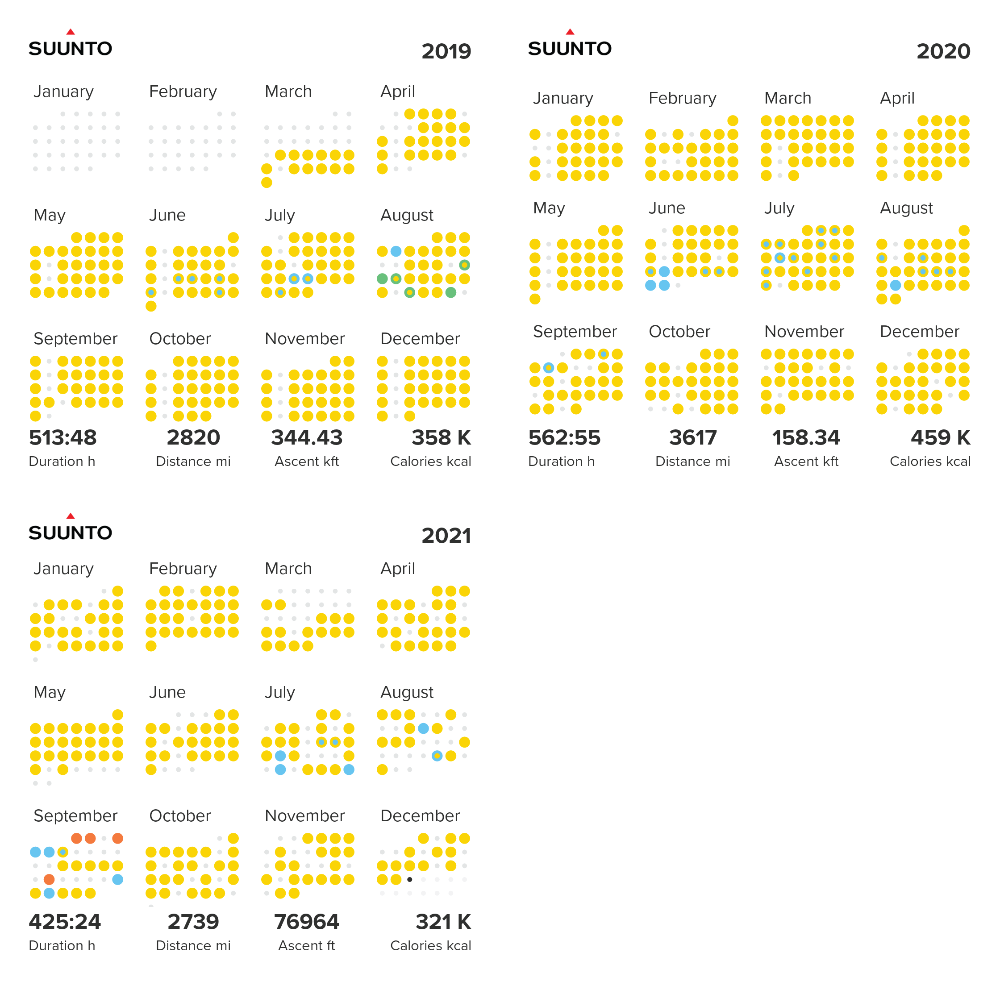

Featured Publications

What can thermal imagery tell us about glacier melt below rock debris?
Frontiers in Earth Science,
2021
I am a self-funded glaciologist working to improve sea level rise estimates, specifically by considering the melt reducing effect of rock debris on glaciers. Rock debris has been a long outstanding omission from global glacier models and my work is focused on resolving this knowledge gap. Beginning in 2009, I established a field research program measuring rock debris on glaciers in the Alaska Range which was, and remains, largely uninvestigated by previous scientists. While I continue to work on understanding the nuances of a single glacier, I am also working on this problem at a global scale, considering all glaciers on Earth. It is at this scale that improved calculations of sea level rise will facilitate better warning, and mitigation of, climate driven crises. To aid other researchers around the world as this subject gains attention, I am developing Debris Cover Tools: a suite of open-source tools aimed at automation, providing an accessible and easy to implement approach to account for rock debris on glaciers. My science is currently funded directly through my interactions with the public while working at a cafe, which I find to be an interesting way to have a pulse on how climate related science is perceived by the public. I work independently and am best reached if you pass by Asbury Park Roastery on the boarwalk in Asbury park, New Jersey and request a cappuccino with latte art :)
PhD in Glaciology, 2019
Northumbria University
BSc in Geology, 2014
University of Alaska Fairbanks
Washington Post An Alaska glacier hurtles downhill in a rare exhibition of ‘this amazing science’
Phys.org Blanket of rock debris offers glaciers more protection from climate change than previously known
Jungfrau Zeitung (Switzerland) Hälfte der Gletscher weltweit mit Schutt bedeckt (Language: DE)
Tages Anzeiger (Switzerland) Wie Schutt die Gletscherschmelze beeinflusst (Language: DE)
Der Standard (Austria) Herumliegender Schutt lässt Gletscher langsamer schmelzen (Language: DE)
El Mercurio (Chile) Una frazada para el glaciar (Language: ES)
教育 新闻 网 岩屑毯为冰川提供了更多的保护 使其免受气候变化的影响 (Language: CMN)
Middle East business and financial news British-Swiss study reveals more glacier-shielding rock debris
Kurier Hälfte der Gletscher weltweit mit Schutt bedeckt (Language: DE)
Népszava Kőtörmelék borítja a gleccsereket (Language: HU)
Hirado.hu A svájci Erdő, Hó- és Tájkutatási Szövetségi Intézet (WSL) első alkalommal vizsgálta meg műholdak segítségével, milyen mértékben fedi kőtörmelék a gleccsereket. (Language: HU)
ORIGO A gleccserek felét törmelék borítja (Language: HU)
Eurasia Review Rock Debris Protects Glaciers From Climate Change More Than Previously Known
Innovations Report Rock debris protects glaciers from climate change more than previously known
AAAS EurekAlert! Rock debris protects glaciers from climate change more than previously known
ScienceDaily Blanket of rock debris offers glaciers more protection from climate change than previously known
Swissinfo.ch British-Swiss study reveals more glacier-shielding rock debris
WSL-Institut für Schnee- und Lawinenforschung SLF Eine Decke aus Gestein schützt Gletscher besser als vermutet vor dem Klimawandel (Language: DE)
science.orf.at Hälfte der Gletscher mit Schutt bedeckt (Language: DE)
Tierwelt Hälfte der Gletscher weltweit mit Schutt bedeckt (Language: DE)
Nau.ch Fast Hälfte der Gletscher weltweit mit Schutt bedeckt (Language: DE)
Anchorage Daily News Meet the man studying Alaska’s glaciers by living on one each summer
Juneau Empire Alaska Science Forum: Living on a glacier, thinking about rocks

2011 - ongoing

Open-source Python/ArcPy toolkit for debris cover research

Publicly available datasets: a refined and consistent version of the RGI and a global debris cover map

Half hobby, half research interest: visiting supraglacial landslides in the Alaska Range

High resolution thermal data for glacier and debris cover research
My running since I bought a Suunto watch in 2019:
(Yellow = run; blue = openwater ocean swim; green = hike; orange = bike)
*to the non-Americans and scientists reading this, please forgive the units :)

2021 was a difficult year, the gaps in March correspond to working non-stop on the first draft of “What can thermal imagery tell us about glacier melt below rock debris?”, and the smaller gaps in May and June were intensive rounds of revisions. In July I sprained my ankle once, and then two more times in August from injury denial (eye roll). While I was still able to run roads to some degree, my running was limited until around November. Of course through it all, paper writing and an ankle the size of a New Jersey peach, I was still working 30-35 hrs/week pouring bougie lattes :)
While I do not race often, below is a link to my International Trail Running Association (ITRA) résumé:
Rather than race, I enjoy running un/self-supported trail and urban ultras on my own. They are usually the result of a momentary random fixation on a challenge or destination and the run usually happens within a few days of getting the idea :)
This running style is predicated on long, off-trail runs in the Alaska Range that filled the summer months of my 20s and came before I ever thought to buy a GPS watch to track them. Most were done alone, usually alongside fieldwork, but I participated in a few events and races during this time, including: AlaskaCross 100 mile wilderness race in 2015, White Mountains 100 (skiing) x2 finishes in 2011 and 2014, Iditasport (225 mile human-powered race on the Iditarod Trail, skiing, 2015, sctatched at mile 51 Yentna Station, only career DNF), Drew’s Angel Creek 50 Miler in 2015, Yukon River Trail Marathon in Whitehorse Yukon Territory Canada x3 finishes (2010, 2014 and 2015), and 9 consecutive Equninox Marathon finishes from 2007 to 2015, before moving to The UK for graduate school.
Since leaving Alaska, and buying my first GPS watch, I’ve run a steady volume of self-supported trail and urban ultras with a special love for “My front door to ___” routes with public transportation back home. Here are some of my favorites:
Tynemouth to Haltwhistle via Hadrian’s Wall (87 km), May 2016 (just before getting my first Garmin)
Joshua Tree Traverse (57 km, 1200 m d+), December 2016
Front door (Gateshead) to Seaham (45 km), February 2017, July 2017
Front door (Gateshead) to Durham (50 km), July 2017
Unsupported Bob Graham Round attempt (70 km, 5000 m d+) August 2018
Gran Canaria running and climbing holiday (9 days, sum 170 km, 7100 m d+) December 2018
Self-supported run across the Alps (France, Switzerland and Italy; 8 days [2 rest/storm days], 300 km, 15000 m d+), August 2019 Day 1,
Day 2,
Day 3,
Day 6,
Day 7,
Day 8
The perimeter of Manhattan Island, night running into the new year (52 km), December 31, 2019
Run across New Jersey, Atlantic Ocean to Pennsylvania (76 km) September 2020
Front door (Bradley Beach) to Manhattan (90-100 km), October 2020 Leg 1,
Leg 2,
Leg 3; and again November 2021
Delaware-Raritan Canal Trail (111 km) April 2021, FKT
Front door (Bradley Beach) to Princeton (73 km) November 2021
Road PR/PBs:
2:48 marathon, Zürich Marathon, 2019
17:08 5k, Newcastle upon Tyne Town Moor Parkrun, 2017

Brooklyn Marathon, April 24th, 2022
Midstate Massive 100 mile ultra trail, October 8th, 2022
My first comedy writing, a pro-litter yet somehow still environmentally conscientious piece, was published in October 2021 on irunfar.com.
Dakota Jones wrote a blog post that tells the story of my mixing science and running in the context of energy and climate education.
I wrote a short commentary in the February 2020 edition of Trail Runner Magazine on the tangible evidence of a changing climate someone running in an alpine setting will encounter.